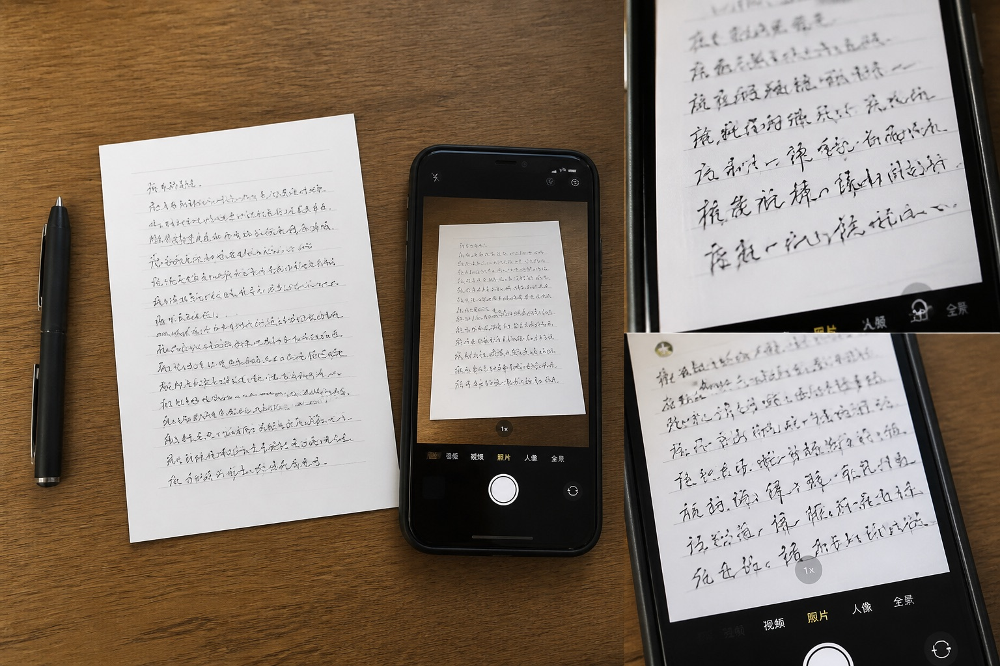

一页手写材料拍了三次，模仿笔迹参考图为什么仍要保留原件边缘
同一页手写材料，有人发来整页照片，又补了两张局部近照。三张图看起来都很清楚，真正整理时却发现：局部图能看笔画，只有保留纸张四周的那张，才能交代行距、留白和落款位置。

三张照片各自回答不同问题
整页图首先回答“这段字写在什么位置”。页面边缘、装订孔、折痕和上下留白，都能帮助还原文字在纸面上的实际比例。局部图适合观察转折和浅色笔画，斜角照片则能补充纸张起伏与光线情况。它们不是互相替代，而是各有用途。
搜索“手写文件拍照”时，很多人只关心字够不够大。实际更容易遗漏的是拍摄范围：一旦把纸边裁掉，字的大小、行距和签字位置就失去参照。整理模仿笔迹参考图时，先留完整页，再补重点局部，通常比连续发送多张裁剪图更清楚。
原图比聊天截图多保留了什么
聊天软件中的预览图可能已经缩小，截图又会再压缩一次。细小的停顿、较淡的笔画以及纸面纹理，经过几次转发后容易变成模糊边缘。最稳妥的做法是保存手机拍摄的原文件，并把整页图和局部图用同一编号对应起来。
如果材料中同时有模仿签名或模仿签字，不要只截取姓名。签字前后的短句、日期、表格线和落款区域都应保留；后续若用于笔迹鉴定资料整理，也能看出图片来自哪一页、是否经过裁切。
拍摄当天就把顺序理清
可以先拍正面完整页，再拍需要放大的两三个位置，最后核对照片编号。纸张尽量放平，镜头与页面保持平行，避免强光把墨迹照白。与其事后凭印象重命名，不如拍完一页就检查一次。
很多人搜索“模仿笔迹能鉴定出来吗”，背后其实关心材料能不能被可靠比较。图片只能呈现其中一部分信息，清晰度、完整范围、形成时间和原件是否保留都会影响可观察内容，因此资料来源要如实标注。
收到图片后先做一次反向检查
打开第一张图时，应该能一眼确认页码和整体版式；打开局部图时，应该知道它来自整页的哪个位置。如果做不到，说明命名或拍摄范围还不够清楚。把这一步放在发送之前，往往能省去多轮补图。
读者常问
整页图需要把桌面也拍进去吗？
不需要大面积拍桌面，但纸张四周应留出少量边界，让页面尺寸和方向有明确参照。
照片已经很清楚，还要保留原文件吗？
要。原文件通常比聊天预览和截图保留更多细节，也便于确认拍摄时间与原始尺寸。
模仿签名、模仿签字的照片也这样整理吗？
原则相同：先保留签字所在的完整区域，再补充局部，不能只留下一个被裁切的名字。